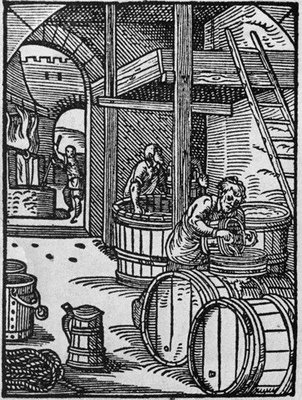

What's on tap?
-
Demigorgon's Delight Tripel(9.8% ABV)
This strong golden ale carries herbal notes and passion fruit in the aroma. Suggestions of honey and biscuit are found in the beer’s complex, varied palate. Tripel lingers on the palate for a complex, dry finish. -
RIP Barb Oatmeal Stout(6.6% ABV)
This oatmeal stout has an explosion of flavor created by dark roasted grains, and a 2 row barley. A full bodied oatmeal stout that has tastes of chocolate and a smoothness from the oatmeal. -
Rolled Twenty American Wheat(4.3% ABV)
An American wheat beer brewed with half barley and half white wheat. We also spice this beer with sweet orange peel. A good drinking beer to quench your thirst during the boiling summer months. -
Christmas Lights Winter Seasonal(7.5% ABV)
Our interpretation of a winter seasonal beer. This beer will curl your toes and put goosebumps on your arms. A fine collection of traditional winter spices make this a great addition to the holiday season…it will make all humbugs cheery.
From Then to Now
A brief history of the upside down
A delectably complex malt profile reminiscent of bread, toast, and biscuits, with hints of caramel, chocolate, and fruity esters. Perfectly balanced bitterness from the earthy, floral hops. Take one sip and another is sure to immediately follow… and another… and another…
Brewed with hand-smoked malt from red and white oak from a forest in Orange County, VA, on land once owned by James Madison. Hazy, slightly muddy brown with orange and copper hues around the edges. Beige head with some initial foam, but it quickly settles to a thin wisp. Most appealing brew of the pack. Sulfites are very hard to detect. Very light body, very white-wine-ish.
Sulfites are very hard to detect. Very light body, very white-wine-ish. Sweet and sour apple flavor in the middle. Kiss of warmth from the alcohol. Wet and refreshing; almost too drinkable. At 6 percent alcohol by volume, any more than a few glasses will make you loopy.
We sampled a few 12-ounce bottles of this cider, chilled down to 40 degrees. Light, fizzy bubbles rise to the top while pouring. Very pale yellow color. Low carbonation. At first glance, you might almost think this is a white wine. Smells of a blend of Pink Lady, Granny Smith and McIntosh apples; a bit buttery and musty in the back.